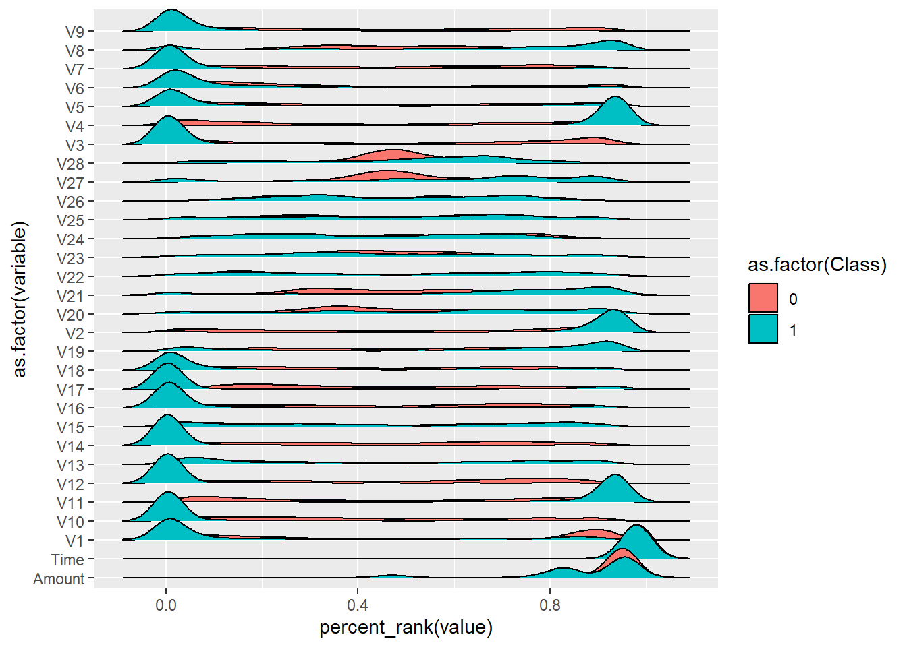

library(readr)
library(tidyr)
library(dplyr)
library(ggplot2)
library(ggridges)
library(purrr)
library(keras)
library(caret)Autoencoder for fraud detection
Credit card data
For this demo, we use a kaggle data set that is readily available (https://www.kaggle.com/mlg-ulb/creditcardfraud). It contains European credit card transactions in the period of September 2013. Note that fraud is a rara phenomenon: of the total of 284,807 transactions only a mere 492 were fraudulent. This corresponds to an incidence rate of 0.172%. This means there is a strong class imbalance.
The dataset contains 28 numerical features (V1 - V28) that are the result of a PCA transformation. This is done for confidentiality. On top of these features also the time is registered and the transaction amount. Time is expressed as seconds after the first observation.
A visual inspection of the data already shows that some of the features have a different distribution for the fraudulent cases compared to the non-fraudulent ones.
As preparatory steps, take the (chronologically) first 230,000 data points as a training set and the rest for validation. This resembles the real-life scenario where you will want to predict for future transactions whether they are fraudulent based on the earlier transactions done.
df <- read_csv("input/creditcard.csv", col_types = list(Time = col_number()))
df_train <- df %>% filter(row_number(Time) <= 230000) %>% select(-Time)
df_test <- df %>% filter(row_number(Time) > 230000) %>% select(-Time)
print(head(df_train))# A tibble: 6 x 30
V1 V2 V3 V4 V5 V6 V7 V8 V9 V10
<dbl> <dbl> <dbl> <dbl> <dbl> <dbl> <dbl> <dbl> <dbl> <dbl>
1 -1.36 -0.0728 2.54 1.38 -0.338 0.462 0.240 0.0987 0.364 0.0908
2 1.19 0.266 0.166 0.448 0.0600 -0.0824 -0.0788 0.0851 -0.255 -0.167
3 -1.36 -1.34 1.77 0.380 -0.503 1.80 0.791 0.248 -1.51 0.208
4 -0.966 -0.185 1.79 -0.863 -0.0103 1.25 0.238 0.377 -1.39 -0.0550
5 -1.16 0.878 1.55 0.403 -0.407 0.0959 0.593 -0.271 0.818 0.753
6 -0.426 0.961 1.14 -0.168 0.421 -0.0297 0.476 0.260 -0.569 -0.371
# i 20 more variables: V11 <dbl>, V12 <dbl>, V13 <dbl>, V14 <dbl>, V15 <dbl>,
# V16 <dbl>, V17 <dbl>, V18 <dbl>, V19 <dbl>, V20 <dbl>, V21 <dbl>,
# V22 <dbl>, V23 <dbl>, V24 <dbl>, V25 <dbl>, V26 <dbl>, V27 <dbl>,
# V28 <dbl>, Amount <dbl>, Class <dbl>df %>%
gather(variable, value, -Class) %>%
ggplot(aes(y = as.factor(variable),
fill = as.factor(Class),
x = percent_rank(value))) +
geom_density_ridges()Picking joint bandwidth of 0.0309
Normalizing the data
We are going to use autoencoders to detect the fraudulent cases. This means we will use the non-fraudulent training data to learn an encoding function for the data. When we apply this on the validation set, we expect to see that the fraudulent transactions are not well reconstructed.
Since an autoencoder is a type of neural network, it is very important to normalize your data first. You can do this by rescaling the data to either a [0,1] or [-1,1] range or by standardizing them so that they are normally distributed with standard deviation 1. In R we can use the caret package which has a preprocessing functionality. With this functionality, we create a transformator with our training data that we can apply on the “future” data points or test set.
minMaxScale <- df_train %>% select(-Class) %>%
preProcess(method = "range") #use c("center", "scale") for standardization
x_train <- predict(minMaxScale, df_train) %>%
select(-Class) %>%
as.matrix() #You need this format for tensorflow to accept it as input
x_test <- predict(minMaxScale, df_test) %>%
select(-Class) %>%
as.matrix()
y_train <- df_train$Class
y_test <- df_test$Class